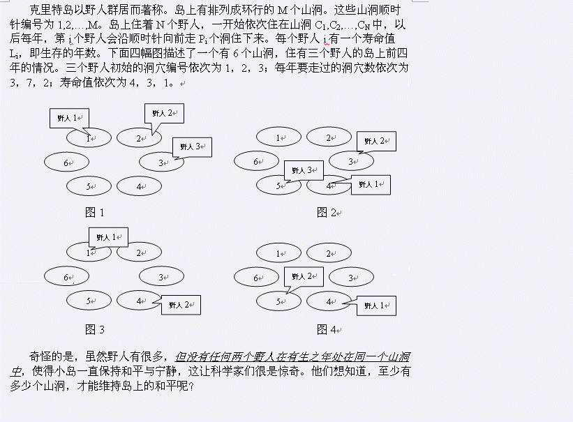

BZPRO
#1407. [Noi2002]Savage
内存限制：64 MiB
时间限制：5 Sec
提交
提交记录
讨论
题目描述

输入格式
第1行为一个整数N(1<=N<=15)，即野人的数目。
第2行到第N+1每行为三个整数Ci, Pi, Li表示每个野人所住的初始洞穴编号，每年走过的洞穴数及寿命值。
(1<=Ci,Pi<=100, 0<=Li<=10^6 )
输出格式
仅包含一个数M，即最少可能的山洞数。输入数据保证有解，且M不大于10^6。
样例
样例输入
3
1 3 4
2 7 3
3 2 1
样例输出
6
//该样例对应于题目描述中的例子。
数据范围与提示